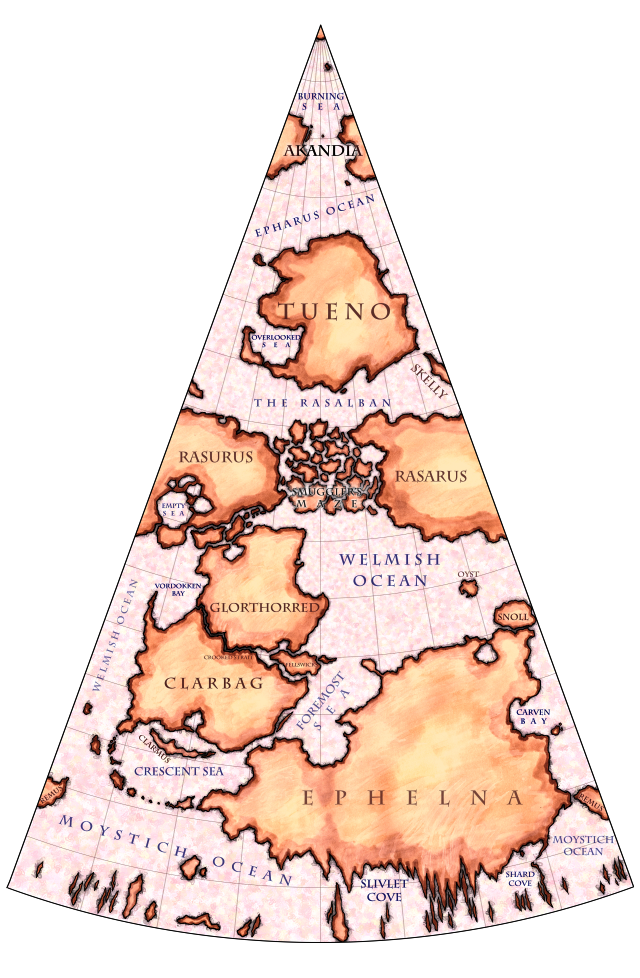
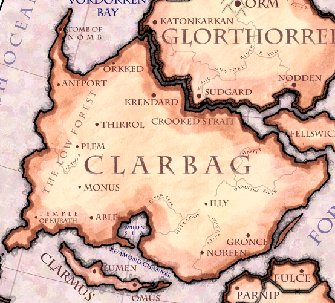
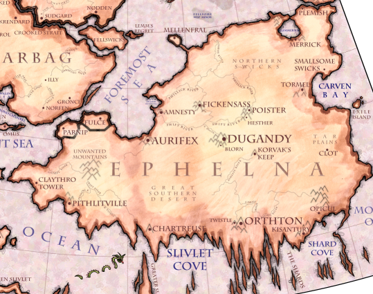
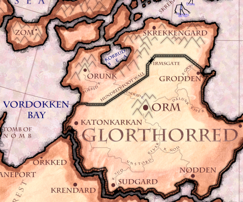
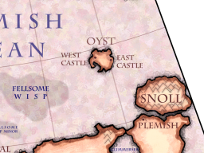
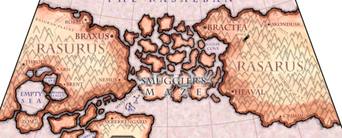
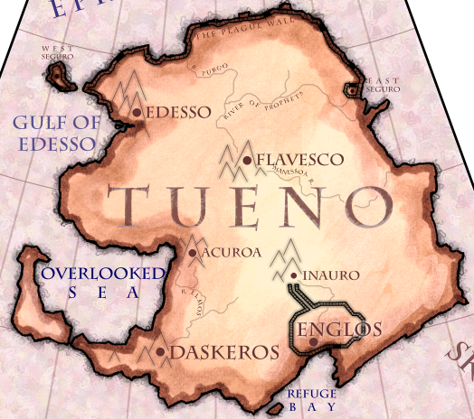

The official Master Map of the Eighth was created on Twisuary 2nd, 97 B.D, during a cartographers conference in Mellenfral. To learn more about a continent (or in the case of Oyst, an interesting island), click its name:

Admittedly, we don't know much about Akandia, and you could criticize us for providing so little information about the place. To that we answer, "if you think it's so easy, make your own map!" Looking at Akandia from a safish distance, it seems a terrific place to visit. Warm and sunny, with sea breezes to cool you off, lovely swaying trees filled with several varieties of assumedly tasty fruit, happy naked people with flawless tans waving at you invitingly. It's a paradisical locale, but head over there and you're sure to come down with a bad case of Zealot's Plague, which means, among other things, that you won't be providing any useful information for updating this map.

Clarbag, Land of the Kingless. From Glorthorred and Ephelna fled those desperate to escape the tyranny of monarchs. After a few damp months in the Low Forest, most refugees decided in retrospect that king's rule wasn't so bad and headed back. Clarbag's lack of mountains makes it nearly impossible to survive the Onsuary Floods, and to this end, most residents have constructed homes in high trees. Both Glorthorred and Ephelna periodically send invasion forces to occupy Clarbag. Towns are effortlessly captured, since the Clarbagi put up no resistance at all. But few rulers have will enough to hold the muddy, worthless land for long. Those that do often find themselves victims of the Kingtaker, a fabled assassin who seems magically to know which exact man gave the order to attack Clarbag.
The Tomb of Nomb is a long-neglected tomb of an ancient kingdom which no longer exists The people of Northern Clarbag have many legends about Nomb, but unfortunately, few of these legends agree with each other. Was Nomb an evil tyrant who ruled with an iron fist? Was he a benevolent and wise sorcerer that led a utopian society long eroded? Was he the advisor of an ancient king, whose craftiness ensured that his memory will survive his long-forgotten master? Was he the last true king of Clarbag, whose dying wish that no king shall ever have his land caused his ghost to become the Kingtaker? Was she perhaps a woman, who disguised herself as a man to fight in wars long past and ended up being the most succesful general in Clarbag history? Or maybe even, as some whisper, Nomb never really existed, but the tomb instead was a clever forgery, the secret meeting place of a clandestine society who from its dusty halls manipulated the politics of the Eighth to suit their whims. Who knows?
Maybe if one day the tomb will be found, these questions could be answered. For now, every archeology student on the Eighth secretly hopes to be the one that will discover this legendary place, even though the more forward, modern thinking scholars tend to scoff at the whole idea and dismiss the tomb as a folklorish invention. All everyone knows for sure is that deep in the libraries of Mellenfral there are ancient, crumbling scrolls that promise great riches to whoever finds it. Of course, the part that contained the directions has long turned to dust, and thanks to some oily fingerprints by some inept scholar of yesteryear, the text is quite smudged. Why, some even think that what it really promises is that whoever will find the tomb will get great roaches...

Ephelnans probably make too big a deal about their continent being the biggest. They like to call it "the Main Continent", "the Greatest Continent", or after eleven cups of Leaf Juice, "the plentybest place to be--so says we!" In truth, if you condensed all the livable areas of the continent together, the resulting land would be about the size of Skelly or Remus--nothing to brag about. During Onsuary Floods, the flat vastness of Ephelna is transformed into a collection of islands where the points of a dozen or so mountains poke through the water.
Ephelna is considered the birthplace of Constructed Thought, a movement which basically advocates that you think about things before doing them. The philosophy of Constructed Thought has been interpreted in support of widely varying ends, including: empowerment of legislatures, dissolution of magics, printing of books, burning of books, lancing of fluid-filled warts, and most notably, the creation of this here map, devised in Mellenfral under the enlightened leadership of Professor Drictum, head of the Cartography department at Mellenfral College, who also happens to be quite a good-looking fellow with charming taste in attire.
Blorn is a trading town, which basically makes its money by having a large market where nearby farmers (and fishermen, during flood season) bring their wares, and traders from larger towns and cities come and buy in bulk. The mayor of Blorn is a very crafty merchant and economist, but has a tendency to cut costs whereever possible, which occasionally has bad results.
Mellenfral is a walled city located on a peninsula off the northern coast of Ephelna (see above map). Famous for inhabitants who concern themselves with art, science, and the pursuit of knowledge. A popular insult for someone who isn't paying close enough attention to practical matters: "He's living in Mellenfral." A certain amount of resentment is present across Ephelna, due to the fact that Mellenfral is constantly being taken over by invaders because they fail to defend themselves sufficiently. Whenever this occurs, neighboring cities must send forces to reclaim Mellenfral, and that's more than a little inconvenient.

Glorthorredians take pride in doing things the hard way. For instance their Hundred-Foot Wall, that encloses nearly the entire continent, could probably have been about fifty feet high and made a perfectly suitable defense against floods and skrekken. Generally, they are a serious people, and can be expected to honor an agreement, but not to laugh at a good joke. In trade exports, they are giants. Glorthorred functions as a factory machine, with busy citizens inside its metal walls producing a neverending stream of goods. These are systematically routed to waiting ships, and launched to foreign ports for sale.
We shouldn't make the Glorthorredians sound like they're all business. Your typical Glorther is an avid stump collector, travelling to exotic locations on weekends in search of unusually-shaped tree stumps he will uproot, drag home, and proudly affix to his walls. That's only just one example, from the many popular pastimes (three, since last we counted) that people in Glorthorred enjoy.

Oyst rises up out of the sea like something that rises up out of the sea really well. The island is made up of two halves - the highlands, in the center of each piece, and the lowlands surrounding, with a single bridge running between the two. Each highland was originally its own kingdom, but the western castle lost its castle to the sea one dark day after the King got a bit too enthusiastic about ordering still deeper dungeons to be built. The King, his personal Architect (and the Architect's dog), the King's whole family and heirs, and everyone else in the castle at the time, perished in the disaster. After several minutes without rule, the East King took control of the Westlands, and since then the kingdoms has been ruled as one. The two kingdoms originally had names of their own, but these names are lost in time. These days they are called the "Twin Kingdoms of Oyst", or simply "the Kingdom", "Oyst", or (usually) "here". The highlands are mostly self-sufficient, but there's little luxury to be had for most people (except the King, of course).
The lowlands ("there") contains, in addition to wraithwings, unspeakable evils (possibly mothingness). The area between the highlands are in eternal darkness, as the highlands shadow the sun. From time to time, people venture into the lowlands, but never return, and whether this is because people are killed (or worse!) or because they find better places to live are heatedly discussed at regular intervals. People believing the latter tend to go to check out for themselves, and never return, which suits the others just fine.

It wouldn't be fair to say that every person on this snow-covered continent is a bloodthirsty cutthroat. No, of course not--many Rasaruns are merely opportunistic cheats. If you sail into the Brentish Sealet with goods to trade, Rasarun port authorities will pull out an abacus and figure if it will be most beneficial to trade with you, to board and murder your crew, or to sink your ship from afar and salvage goods from the watery wreckage.
Although noone really wants to deal with Rasaruns, it becomes necessary since the continent spans the entire equator, and blocks travel between the North and South. To journey from Glorthorred to Tueno probably means you will take Thurjin's Way along the Whittled River, becoming a painfully obvious target for banditry, and then pay a brutal toll at The Pinch in exchange for passage into Bractea, which is also an uncomfortably hostile place to be. You might instead try navigating through the icy Smuggler's Maze, but...
No, just don't do that--it's a terrible idea.

Everyone likes Tuenans. They have the best food, the best music, the best parties, and they never seem to let it go to their heads. If you were planning a vacation, and can manage the expense and risk of spending five to fifty months at sea, by all means, go to Tueno!
At one time, Tueno was overrun with Zealot's Plague, a disease which creates a state of bliss in those who carry it. That doesn't seem so bad, but ask yourself: do you really want to be happy all the time? If you were starving to death, for example, violent desperation is probably a more useful mood. After a century of bloodshed initiated by the uninfected, every one of the zealots on the continent were killed. Fearing more would arrive from Akandia, Tueno then contracted with Glorthorred engineers to build the Plague Wall, which spans 1800 miles of the north Tuenan coast. Occasionally, a raft comes floating over the Epharus carrying a friendly, naked Akandian who seeks to "Spread the Bliss". The Tuenan response is invariably a volley of arrows sent down from the wall.